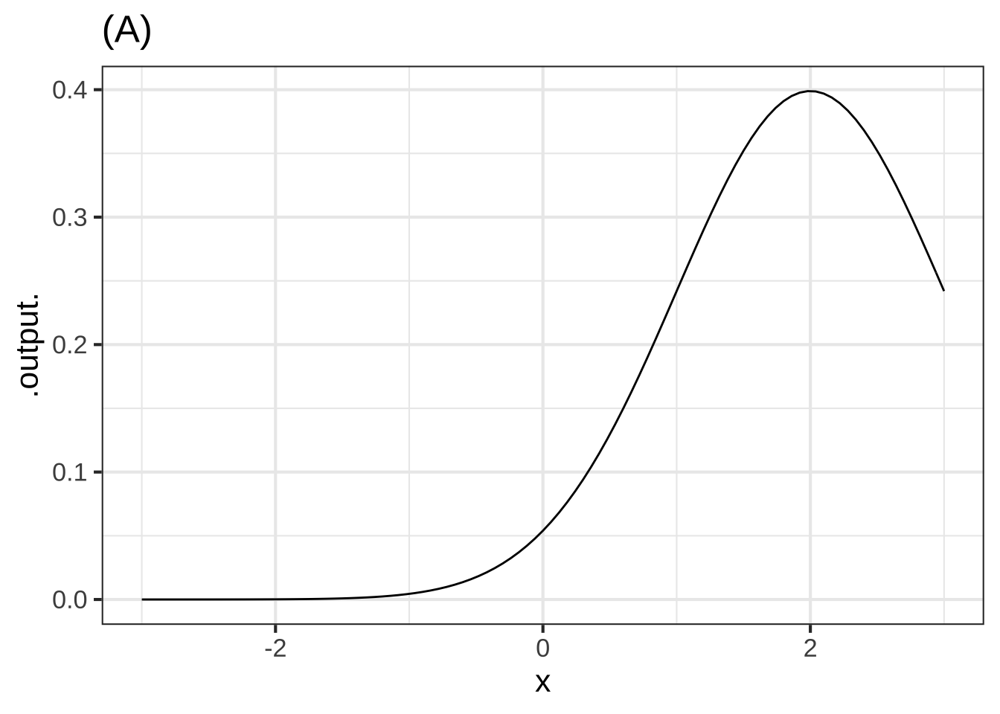
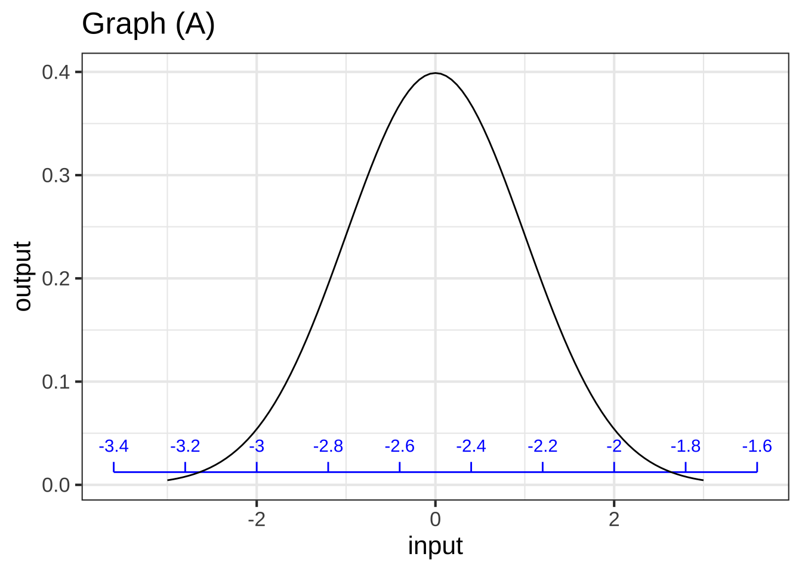
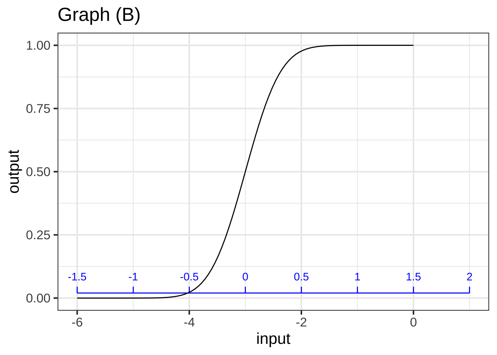

Chapter 18 Convexity and curvature
Looking locally at the graph of a function our eyes immediately register the slope. A glance shows whether the slope is positive or negative. Comparing the slopes at two locales is also an automatic visual task: most people have little difficulty saying which slope is steeper. One consequence of this is our ability to perform a task visually:
- Tangent line: We can recognize whether a line that touches the graph at a point is tangent to the graph.
 Question A Glance at the graph. In which boxes the slope is negative?
Question A Glance at the graph. In which boxes the slope is negative?
 Question B Consider the slope of the function in the domains marked by the boxes. What is the order of boxes from least steep to steepest?
Question B Consider the slope of the function in the domains marked by the boxes. What is the order of boxes from least steep to steepest?

Question C Which of the line segments is tangent to the curve at the point marked with a dot?
A ☹︎ B ☹︎ C ☹︎ all of them ✓ none of them ☹︎

Question D Which of the line segments is tangent to the curve at the point marked with a dot?
A ✓ B ☹︎ too shallow C ☹︎ too steep all of them ☹︎ none of them ☹︎
Finding a numerical value for the slope is not an automatic process. We need to do some arithmetic, computing rise over run. Or, in the language of calculus, we can calculate the slope by evaluating the derivative function.
Other aspects of functions are also readily discerned from a glance at the function graph.
- Concavity: We can tell within each locale whether the function is concave down, concave up, or not concave.
- Curvature: Generalizing the tangent line capability a bit, we can do a pretty good job of eyeballing the tangent circle recognizing whether a circle has much too large or much too small a radius..
- Smoothness: We can distinguish smooth functions from non-smooth ones. Or, as you will see, there are some kinds of smoothness that we can discern and others that are not apparent to the eye.
This chapter is about how to quantify these properties. It turns out that this is naturally done by calculating derivatives. (In the case of smoothness, continuity of the derivative function. So do continuity before smoothness.)
The following exercises are simply meant to test your visual acuity in spotting concavity, tangency, and smoothness.
 Question E In which of the boxes is the function concave up?
Question E In which of the boxes is the function concave up?
A and E ✓ B and D ☹︎ C and D ☹︎

Question F In which boxes is the function smooth?
- A and B ☹︎
- B and C ☹︎
- A and C ✓
- none of them ☹︎
- all of them ☹︎
 Question G In which boxes is the function smooth?
- A and B ☹︎
- B and C ☹︎
- A and C ☹︎
- none of them ☹︎
- all of them ✓
 Question H In which boxes is the function smooth?
A ✓ B ☹︎ neither of them ☹︎ both of them ☹︎18.1 Concavity
Change in the slope
18.2 Curvature
Orthogonal to tangent
Tangent circle to function.
Graphics frame.
We’re also pretty good at eyeballing the radius of curvature. This can be calculated from the first and second derivatives. The radius of curvature operator is \[{\cal K} f(x) \equiv \frac{\left|\partial_{xx} f(x)\right|}{\left|1 + \left(\strut\partial_x f(x)\right)^2\right|^{3/2}}\]